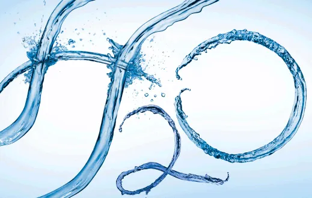

Если питьевая вода содержит химические добавки: риски и решение
Коротко: в водопроводную воду на этапе водоподготовки добавляют реагенты, чаще всего хлор и коагулянты, чтобы обеззаразить её и осветлить. Они выполняют полезную задачу, но могут влиять на вкус и запах. Снизить их остаточное количество помогают угольная фильтрация, обратный осмос и озонирование вместо хлорирования, а о составе конкретной воды лучше судить по анализу, а не по ощущениям.
Зачем в воду добавляют реагенты
Городской водопровод — это не просто труба из источника в квартиру. Сначала воду забирают из реки или скважины, затем очищают от взвеси, обеззараживают и только потом подают в сеть. Реагенты нужны, чтобы вода была микробиологически безопасной на протяжении всего пути, а он может занимать много километров труб разного возраста.
Поэтому наличие реагентов само по себе не означает нарушение. Вопрос в другом: сколько их остаётся в воде у вас на кухне, как они влияют на вкус и хотите ли вы дополнительно очищать воду для питья и приготовления еды.
Какие вещества встречаются чаще всего
- Хлор и его соединения. Самый распространённый способ обеззараживания, потому что хлор действует и после выхода воды с очистной станции. Он даёт характерный запах и привкус. При контакте с органическими веществами образуются побочные хлорорганические соединения, содержание которых нормируется.
- Коагулянты и флокулянты. Это вещества, которые помогают собрать мелкие частицы в крупные хлопья, чтобы затем отфильтровать их. При стабильной работе станции их остаточное количество невелико.
- Фтор. В некоторых странах фторирование воды применяют как общественную меру, в других его не используют. Какая практика действует в вашем районе, лучше уточнить у водоканала.
Кроме реагентов, на состав воды влияют износ труб, ржавчина и накопления внутри старых стояков. Эти факторы не связаны с водоподготовкой, но тоже меняют итоговую воду в кране.
Как понять, что в воде есть хлор или примеси
Самый заметный признак — запах хлора, особенно после долгого простоя воды в трубах и при наливании горячей воды. Мутность, ржавый оттенок или осадок в чайнике указывают скорее на состояние труб и жёсткость воды, чем на реагенты.
Точно определить содержание отдельных веществ можно только лабораторным анализом. Бытовые экспресс-тесты дают ориентировочный результат, а для достоверной оценки лучше обращаться в аккредитованную лабораторию. Если у вас есть вопросы к качеству воды в доме, имеет смысл начать с запроса в обслуживающую организацию.
Как снизить остаточное содержание реагентов
Отстаивание и кипячение
Если налить воду в открытую ёмкость и подождать, часть свободного хлора улетучится. Кипячение ускоряет этот процесс, но не убирает соли, металлы и многие другие примеси. Кроме того, кипячение — ненадёжный способ избавиться от побочных соединений хлора.
Фильтры-кувшины и угольные картриджи
Активированный уголь связывает хлор и часть органических соединений, поэтому вкус воды обычно заметно улучшается. Однако картриджи нужно менять строго по графику: изношенный элемент перестаёт работать, а при длительном использовании на нём могут размножаться микроорганизмы. Эффективность зависит от конкретной модели.
Обратный осмос
Мембрана обратного осмоса пропускает молекулы воды и задерживает большую часть растворённых веществ, включая значительную долю солей и органических соединений. Обычно перед мембраной ставят угольные фильтры, которые защищают её от хлора. Преимущества и ограничения метода разобраны в статье обратный осмос: плюсы и минусы.
Озонирование
Озон обеззараживает воду без добавления хлора и самопроизвольно распадается до кислорода. Поэтому его применяют на финальном этапе, чтобы вода оставалась стерильной при разливе, не приобретая хлорного привкуса.
| Метод | Что даёт | На что обратить внимание |
|---|---|---|
| Отстаивание | Снижает запах хлора | Не убирает другие примеси |
| Угольный фильтр | Улучшает вкус и запах | Своевременная замена картриджа |
| Обратный осмос | Задерживает большую часть растворённых веществ | Нужны установка и обслуживание |
| Озонирование | Стерилизация без хлора | Применяется в промышленных линиях |
Как очищаем воду мы
В Crystal Water вода «Кришталево-чиста питна вода» проходит 8 ступеней очистки. В цепочку входят угольная фильтрация, обратный осмос и озонная стерилизация, поэтому для обеззараживания не требуется хлор. Водородный показатель готовой воды составляет около 7,5. Все этапы описаны на странице технологии очистки, а общие советы по выбору воды собраны в статье как выбрать питьевую воду для дома.
Бутыль объёмом 19,9 л стоит 100 грн, залог за тару — 225 грн, помпа — 160 грн. Мы доставляем воду в Броварах и Киеве, минимальный заказ — 2 бутыли, а первую можно попробовать бесплатно. Актуальные условия указаны на странице услуги и цены, а о компании можно прочитать в разделе о нас.
Практические советы
Если вам не нравится вкус или запах воды, начните с простых шагов: не пейте воду, которая долго стояла в трубах, дайте ей стечь несколько секунд, храните воду в закрытой чистой посуде. Эти меры не заменяют очистку, но снижают заметность запаха.
Для ежедневного питья и готовки удобнее выбрать один стабильный источник воды с понятной технологией, чем смешивать воду из разных источников.
Частые вопросы
Опасна ли вода из-под крана из-за хлора?
Допустимое содержание хлора нормируется, а его использование направлено на микробиологическую безопасность. Если вам не нравится вкус или запах, воду можно дополнительно очистить. По вопросам здоровья консультируйтесь с врачом.
Как избавиться от запаха хлора?
Воду можно отстоять в открытой посуде или пропустить через угольный фильтр. Для питья и готовки многие выбирают очищенную воду в бутылях.
Убирает ли кипячение химические добавки?
Свободный хлор частично улетучивается, но соли, металлы и многие органические соединения остаются. Кипячение решает задачу обеззараживания, но не полной очистки.
Как проверить состав воды дома?
Надёжнее всего сдать пробу в аккредитованную лабораторию. Экспресс-тесты дают лишь ориентировочные данные.
Больше материалов о воде вы найдёте в разделе статьи.
Попробуйте воду без хлорного привкуса
Закажите воду Crystal Water в Броварах или Киеве: первая бутыль для пробы бесплатно, минимальный заказ — 2 бутыли. Телефоны: +38 (063) 788-68-80, +38 (063) 530-40-50.
Посмотреть цены и заказать